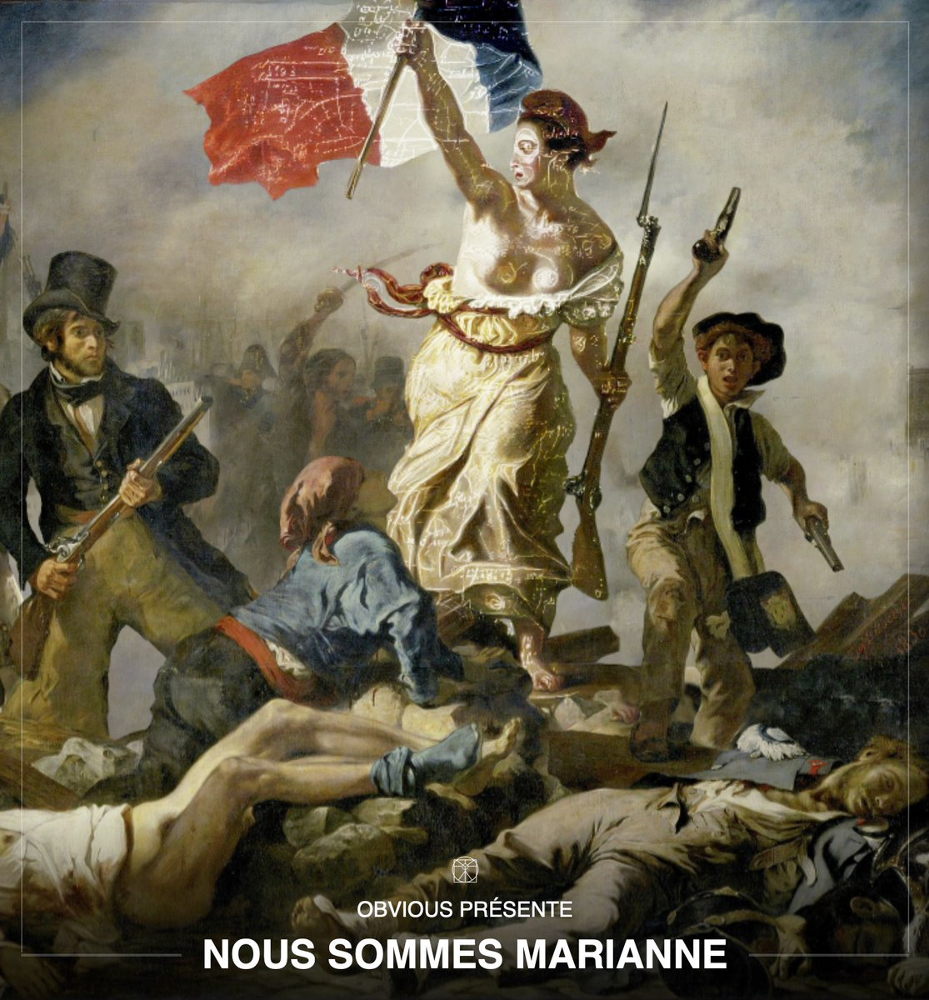

Ce site web est réalisé dans le cadre du cours d'intéractivité ART1213.
Nous sommes Marianne
Le collectif Obvious s’est lancé comme défi de révolutionner le visage emblématique de la République Française, Marianne. Un des symboles de la république française depuis 1792 qui se voit aujourd’hui vieillissant et ne représentant plus vraiment le visage de la femme française d’aujourd’hui.
La question étant, qui devrait incarner ce nouveau visage ? Nombre de personnalités françaises se sont vu incarner les traits de Marianne, mais pour le collectif Obvious, une femme ne suffit pas à incarner le visage de toute une nation. C’est donc avec cette idée qu’Obvious numérise la Marianne de demain à l’aide de la technologie de l’intelligence artificielle.
Qu’est-ce que le collectif Obvious ?
Créé en 2018, Obvious est un collectif français basé à Paris composé de trois amis et chercheurs, Pierre Fautrel, Hugo Caselles- Duprès et Gauthier Vernier. Ils travaillent avec les derniers modèles de deep learning afin d’explorer tout le potentiel créatif de l’intelligence artificielle et de partager leur vision sur ces technologies. Ils sont à l’origine de “La famille de Bellamy” une oeuvre d’art regroupant 11 tableaux basés sur l’art européen classique à travers le regard d’une intelligence artificielle. Ce collectif est un des précurseurs dans la reconnaissance de l’intelligence artificielle comme oeuvre d’art, ils sont notamment à l’origine d’une des premières ventes aux enchères au sein d’une grande maison de vente aux enchères (la maison Christie’s) d’une de leurs oeuvres d’intelligence artificielle. Souhaitant avant tout faire partager leur vision de l’intelligence artificielle et son intégration dans notre mode de vie quotidienne.
IBM définit le deep learning comme : “L'apprentissage en profondeur est un sous-ensemble de l'apprentissage automatique, qui est essentiellement un réseau de neurones à trois couches ou plus. Ces réseaux de neurones tentent de simuler le comportement du cerveau humain, bien que loin de correspondre à ses capacités, lui permettant « d'apprendre » à partir de grandes quantités de données. Alors qu'un réseau de neurones avec une seule couche peut toujours faire des prédictions approximatives, des couches cachées supplémentaires peuvent aider à optimiser et à affiner pour plus de précision.” (IBM, Deep Learning. https://www.ibm.com/cloud/learn/deep-learning, 2020)
Le projet
 Nous sommes Marianne. Crédit : Obvious : NOUS SOMMES MARIANNE (2018)
Aujourd’hui, de nouvelles technologies permettent d’analyser un grand nombre d’images et permettent ainsi d’apprendre à une intelligence artificielle de créer un nouvel exemple à partir de ces images.
Ce projet artistique vise à récolter les photographies des bustes de femmes françaises majeures et consentantes. Ayant pour but de créer, grâce à l’intelligence artificielle, la femme française représentative de l’ensemble de ces femmes, dans leur diversité autant que dans leur concordance. Le résultat ne ressemblera donc à aucune des photos récoltées, mais l’intelligence artificielle aura utilisé chaque photo pour la réalisation de l'œuvre finale.
Cette œuvre sera donc proposée comme candidate pour l’impression de la prochaine édition de timbres postes, le collectif souhaite également en offrir un exemplaire physique au Président de la République française.
En conclusion
Il est très intéressant de vouloir impliquer la population afin de vouloir reconstruire l'image de la Française. Cependant, il faut faire attention avec ce genre d'intelligence artificielle. Les images sont collectées avec l'IA. Elles seront utilisées, mais le résultat ne ressemblera pas à aucune des photos. Comment être certain que l'utilisation de leurs photos se limite au projet ?
Est-ce que vous, chères Françaises, donneriez votre visage afin de créer la nouvelle Marianne ?
Suggestion de visionnement
Sources
Nous sommes Marianne Obvious. Créons ensemble une nouvelle marianne à l'image des Françaises, 2018.
Obious AI & Art Obvious. Obvious AI & Art, 2018.
« Obvious » : ils veulent crée une Marianne avec 50 000 portraits de françaises Corentin. « Obvious » : ils veulent crée une Marianne avec 50 000 portraits de françaises, PepsNews. (2021)
Définition du Deep Learning IBM. Deep Learning, 2020m.